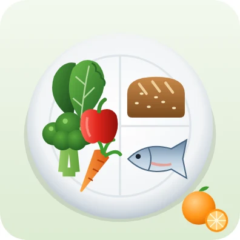
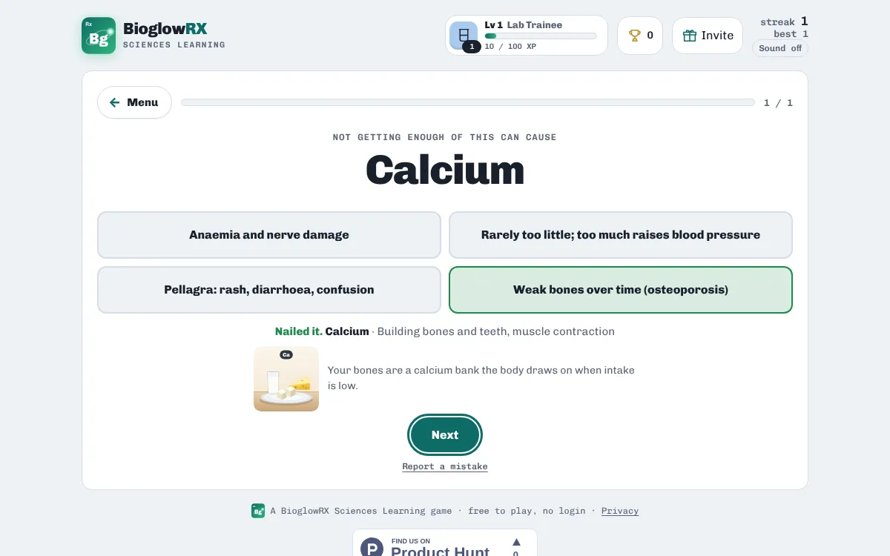
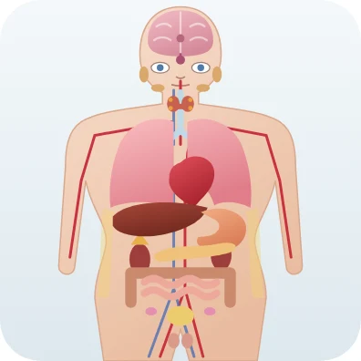
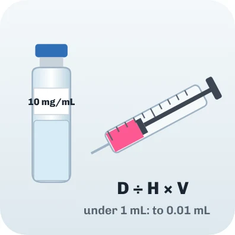
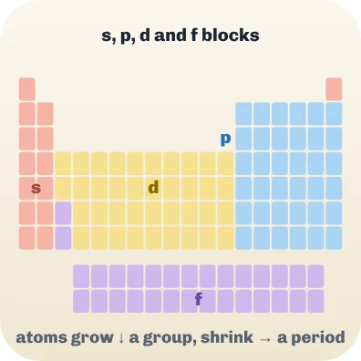

Nutrition · free · no login
Vitamins and minerals quiz

Vitamins and minerals are needed in small amounts, but each has a job no other nutrient can do. For exams you usually need three things for each one: what it does, where you find it, and what a deficiency looks like.

Nutrient Rush quizzes you on all three for 17 vitamins and minerals, split into fat-soluble vitamins, water-soluble vitamins, major minerals and trace minerals.
A taste of what's inside
| Nutrient | Not enough causes | Found in |
|---|---|---|
| Vitamin A | Night blindness | Carrots, sweet potato, leafy greens, liver, eggs |
| Vitamin D | Rickets in children, osteomalacia (soft, aching bones) in adults | Sunlight on skin, oily fish, eggs, fortified foods |
| Vitamin E | Nerve and muscle problems (rare) | Vegetable oils, sunflower seeds, almonds |
| Vitamin K | Easy bleeding and bruising | Leafy greens like kale, spinach and broccoli |
| Vitamin C | Scurvy: bleeding gums, slow healing | Citrus fruit, peppers, kiwi, strawberries |
| Thiamine (B1) | Beriberi: nerve and heart problems | Whole grains, pork, beans |
| Riboflavin (B2) | Cracks at the corners of the mouth | Eggs, mushrooms, lean meat, yeast extract |
| Niacin (B3) | Pellagra: rash, diarrhoea, confusion | Chicken, tuna, peanuts, whole grains |
Ways to practise
- Study notes · Read the key ideas first: everything the games ask is in here.
- Explore nutrients · Tap a nutrient to see its job, foods and deficiency.
- Not enough causes… · See the nutrient, pick its deficiency sign.
- Find it in food · See the foods, name the nutrient.
- Vitamin or mineral? · Sort each nutrient by type.
- Match Pairs · Pair each nutrient with its deficiency.
How to study with it
- Read the Study notes on each nutrient group.
- Play Not enough causes… and Find it in food.
- Then sort them in Vitamin or mineral? and finish with Match Pairs.
Questions
Which vitamins are fat-soluble?
Vitamins A, D, E and K. They are stored in body fat, so large amounts can build up.
Is it free?
Yes. Everything is free, with no ads and nothing to buy.
Do I need an account?
No. There is no login. Your scores, streaks and certificates are saved on your device.
Does it work on a phone?
Yes. It works in any modern browser on phones, tablets, Chromebooks and computers.
More free practice

PharmacologyNursing pharmacology: drug classes quiz25 common medicines: class, system and usePlay free
PharmacologyFree dosage calculation practiceTablets, liquids, mg/kg and IV rates with worked answersPlay free
ChemistryPeriodic table gameNames, symbols, families and where each element sitsPlay freeBioglowRX Sciences Learning turns university science textbooks into free games, chapter by chapter: chemistry, anatomy & physiology, pharmacology, nutrition, and health & wellness. See all subjects.